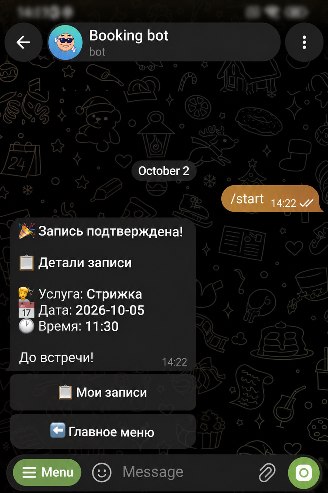
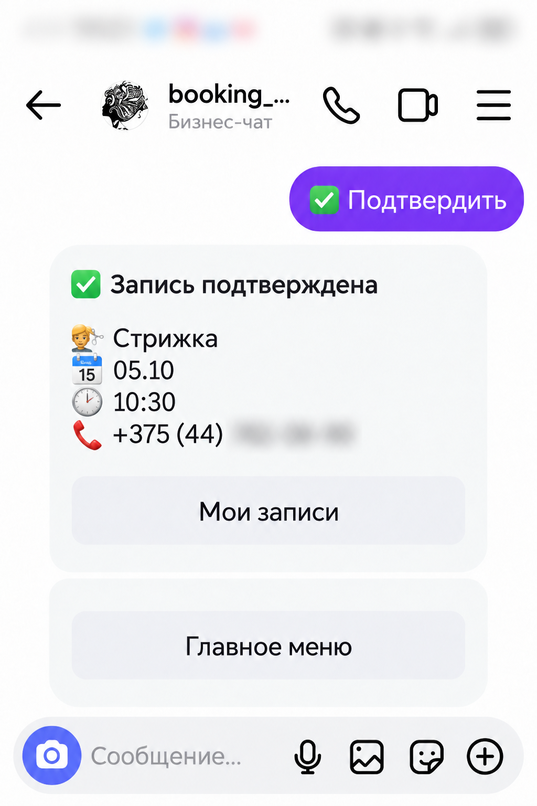
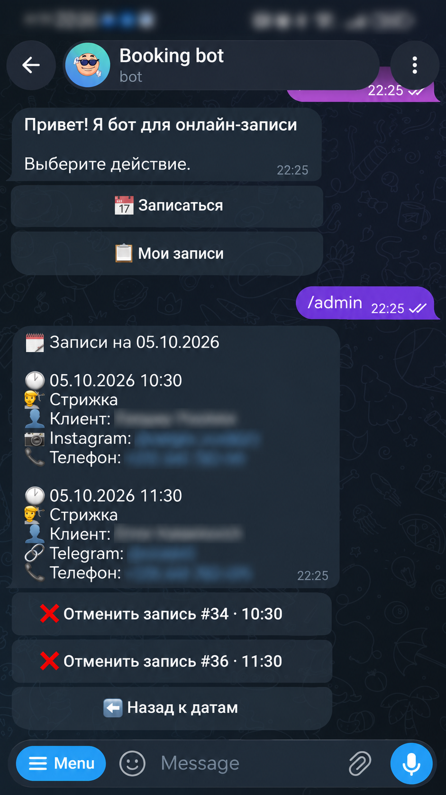
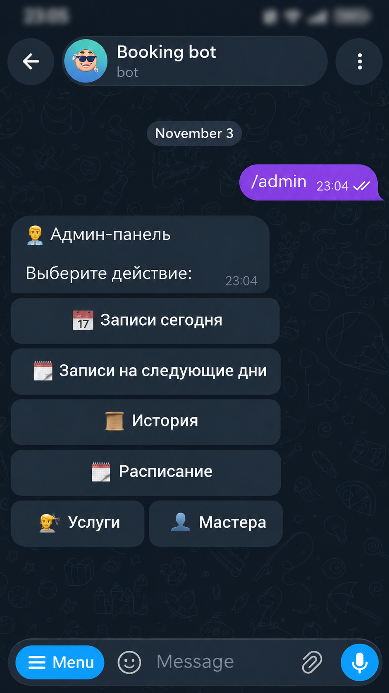
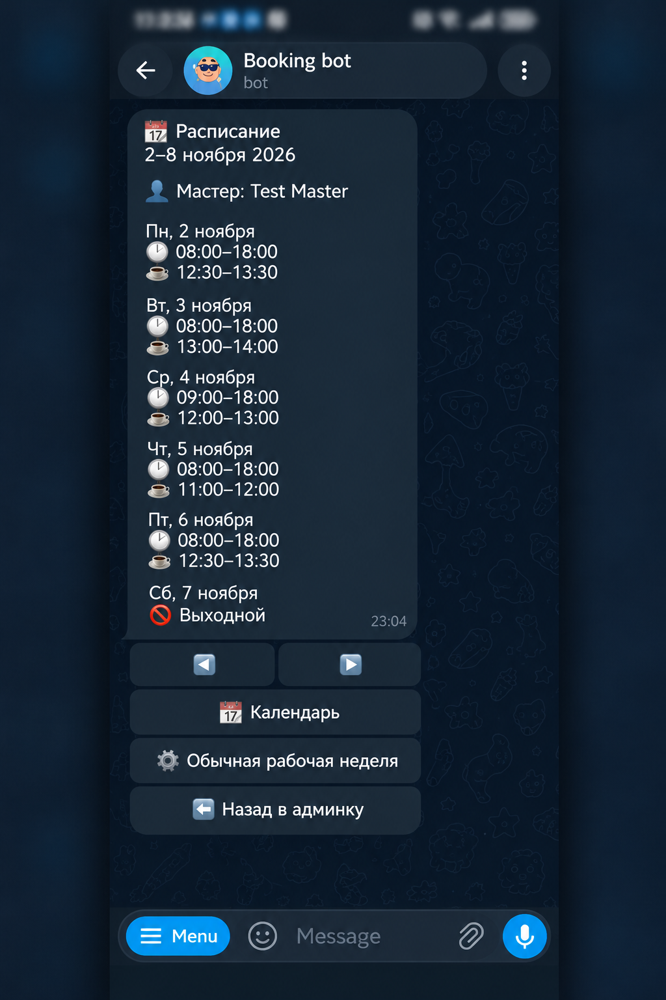
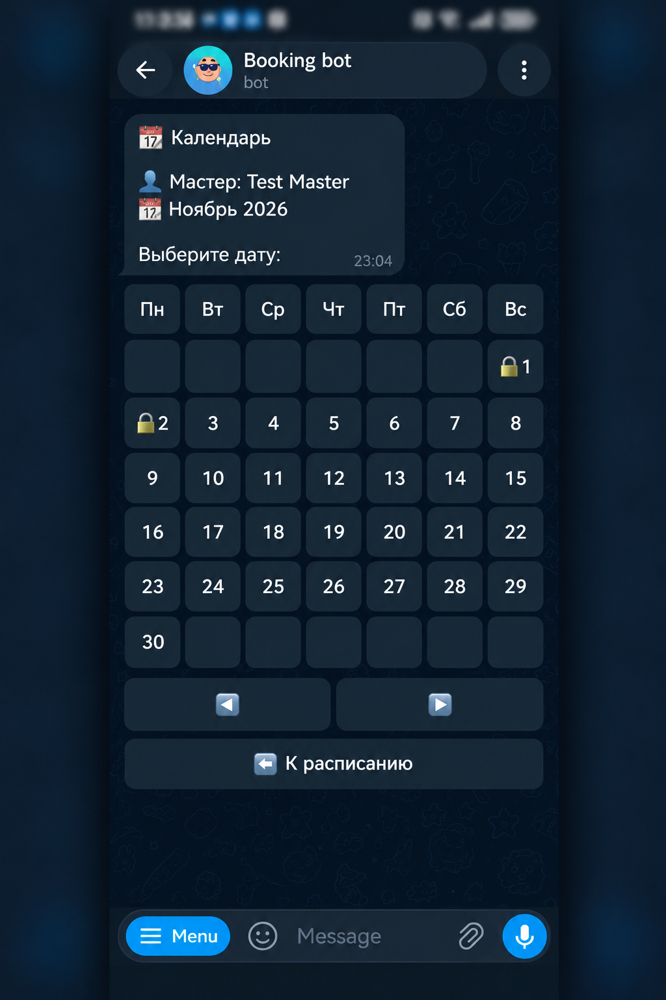
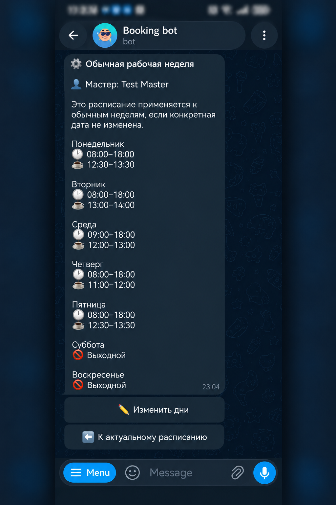
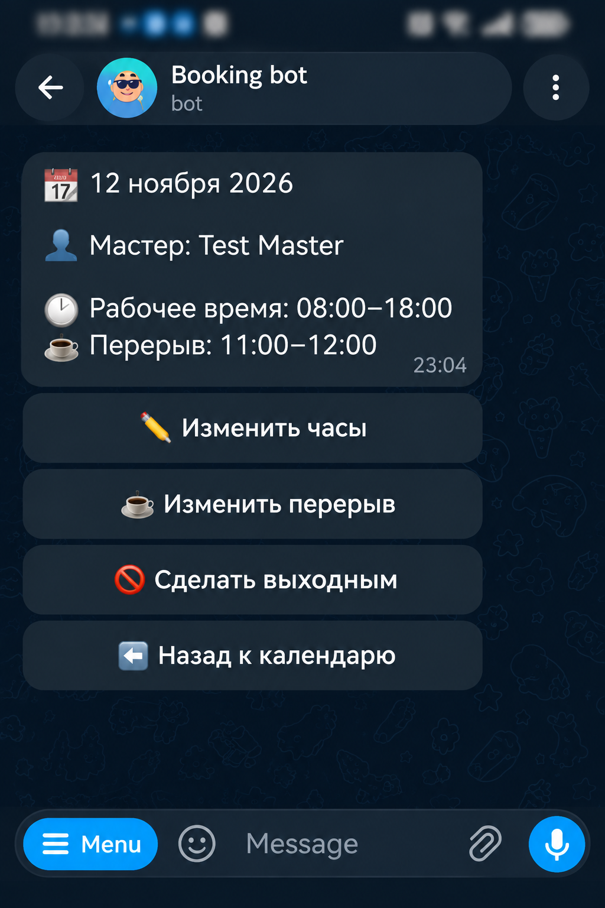
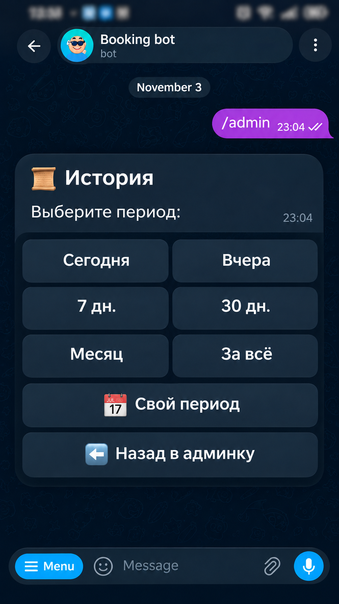

В привычном канале общения
BookingBot подключается к вашему бизнес-каналу в Telegram или Instagram Direct. Клиенту не нужно отдельное приложение.
Автоматизация записи клиентов через Telegram и Instagram — без лишней переписки и ручного согласования визитов.


Клиент сам выбирает услугу, дату и свободное время, затем получает подтверждение. Вам не нужно согласовывать каждый визит вручную.
BookingBot подключается к вашему бизнес-каналу в Telegram или Instagram Direct. Клиенту не нужно отдельное приложение.
Услуга, дата, время и подтверждение — всё в привычном канале общения.
Клиент записывается самостоятельно. Вы управляете записями в одном меню.
Клиенты записываются через Telegram и Instagram Direct, а вы видите все записи вместе. Занятое время недоступно для записи в обоих каналах.
Задавайте рабочие часы, выходные и перерывы. Меняйте график на конкретную дату, когда планы меняются.

Записи, история, расписание и услуги доступны в меню Telegram.

Настраивайте обычную рабочую неделю, часы и перерывы. Через календарь меняйте график на конкретную дату или отмечайте выходной.




Нажмите на скриншот, чтобы рассмотреть детали.
Просматривайте завершённые и отменённые записи: используйте быстрые фильтры, задавайте свой период и переходите между страницами.
Сегодня, вчера, 7 дней, 30 дней, текущий месяц или вся история — выбирайте подходящий период или укажите начальную и конечную даты.

Подтверждение с деталями записи и напоминание перед визитом. Если мастер отменит запись, клиент получит уведомление в своём канале и сможет записаться снова.
Уведомления в Telegram о новых записях из обоих каналов и об отменах клиентами.
BookingBot повторно проверяет доступность времени перед подтверждением. Даже если несколько клиентов записываются одновременно, расписание защищено от накладок.
Уведомления приходят в тот канал, где клиент записался. Клиенты Telegram и Instagram учитываются отдельно.
Клиент пишет «Записаться» и открывает меню BookingBot. Кнопка «Записаться» в меню ведёт к выбору услуги, даты и времени.
Услуга Дата Время Телефон Подтверждение
От выбора услуги до подтверждения записи.
Тот же сценарий в Instagram Direct.
Нажмите на скриншот, чтобы рассмотреть детали.
Откройте бота и ознакомьтесь со сценарием записи: от главного меню до подтверждения.